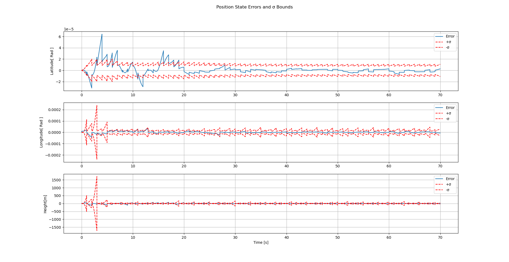
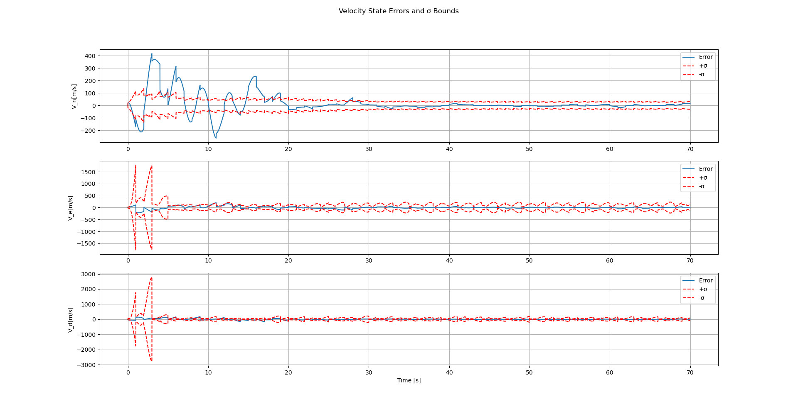
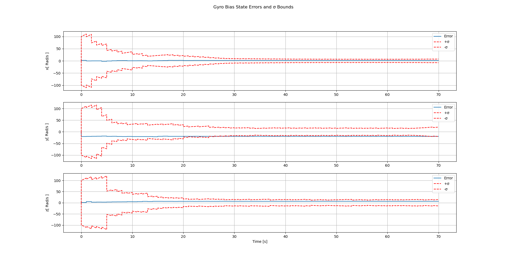
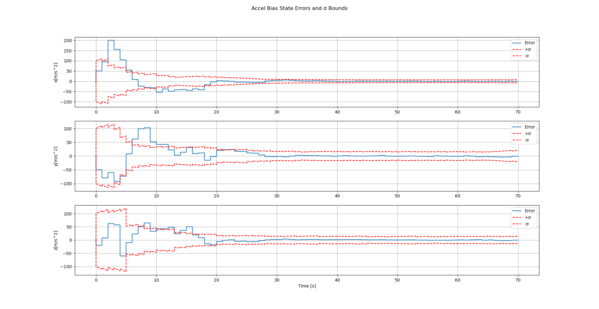
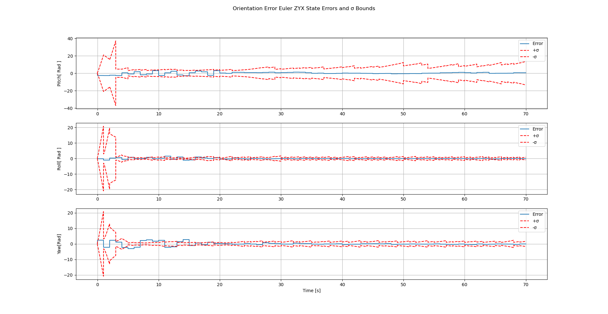

EKF 15 States
Table of Contents
1. Introduction
In this paper I’ve implemented 15 EKF states , The motion model has been implemented by J.Farrel book on aided navigation .
\begin{equation} \begin{bmatrix} \delta\dot{\boldsymbol{p}} \\ \delta\dot{\boldsymbol{v}} \\ \dot{\boldsymbol{\rho}} \\ \delta\dot{\boldsymbol{x}}_a \\ \delta\dot{\boldsymbol{x}}_g \end{bmatrix} = \begin{bmatrix} \boldsymbol{F}_{pp} & \boldsymbol{F}_{pv} & \boldsymbol{F}_{p\rho} & \boldsymbol{0} & \boldsymbol{0} \\ \boldsymbol{F}_{vp} & \boldsymbol{F}_{vv} & \boldsymbol{F}_{v\rho} & -\boldsymbol{R}_b^n \boldsymbol{F}_{va} & \boldsymbol{0} \\ \boldsymbol{F}_{\rho p} & \boldsymbol{F}_{\rho v} & \boldsymbol{F}_{\rho\rho} & \boldsymbol{0} & \boldsymbol{R}_b^n \boldsymbol{F}_{\rho g} \\ \boldsymbol{0} & \boldsymbol{0} & \boldsymbol{0} & \boldsymbol{F}_{aa} & \boldsymbol{0} \\ \boldsymbol{0} & \boldsymbol{0} & \boldsymbol{0} & \boldsymbol{0} & \boldsymbol{F}_{gg} \end{bmatrix} \begin{bmatrix} \delta\boldsymbol{p} \\ \delta\boldsymbol{v} \\ \boldsymbol{\rho} \\ \delta\boldsymbol{x}_a \\ \delta\boldsymbol{x}_g \end{bmatrix} + \begin{bmatrix} \boldsymbol{0} & \boldsymbol{0} & \boldsymbol{0} & \boldsymbol{0} \\ -\boldsymbol{R}_b^n & \boldsymbol{0} & \boldsymbol{0} & \boldsymbol{0} \\ \boldsymbol{0} & \boldsymbol{R}_b^n & \boldsymbol{0} & \boldsymbol{0} \\ \boldsymbol{0} & \boldsymbol{0} & \boldsymbol{I} & \boldsymbol{0} \\ \boldsymbol{0} & \boldsymbol{0} & \boldsymbol{0} & \boldsymbol{I} \end{bmatrix} \begin{bmatrix} \boldsymbol{\nu}_a \\ \boldsymbol{\nu}_g \\ \boldsymbol{\omega}_a \\ \boldsymbol{\omega}_g \end{bmatrix} \tag{11.1} \end{equation}where the top left of the F equation is
\begin{equation} \mathbf{F_{{1:9,1:9}}} = \left[ \begin{array}{ccccccccc} 0 & 0 & \dfrac{\rho_E}{R_e} & \dfrac{1}{R_e} & 0 & 0 & 0 & 0 & 0 \\ -\dfrac{\rho_D}{\cos(\phi)} & 0 & -\dfrac{\rho_N}{R_e \cos(\phi)} & 0 & \dfrac{1}{R_e \cos(\phi)} & 0 & 0 & 0 & 0 \\ 0 & 0 & 0 & 0 & 0 & -1 & 0 & 0 & 0 \\ \hline F_{41} & 0 & F_{43} & k_D & 2\omega_D & -\rho_E & 0 & f_D & -f_E \\ F_{51} & 0 & F_{53} & F_{54} & F_{55} & F_{56} & -f_D & 0 & f_N \\ -2v_E\Omega_D & 0 & F_{63} & 2\rho_E & -2\omega_N & 0 & f_E & -f_N & 0 \\ \hline -\Omega_D & 0 & \dfrac{\rho_N}{R_e} & 0 & -\dfrac{1}{R_e} & 0 & 0 & \omega_D & -\omega_E \\ 0 & 0 & \dfrac{\rho_E}{R_e} & \dfrac{1}{R_e} & 0 & 0 & -\omega_D & 0 & \omega_N \\ F_{91} & 0 & \dfrac{\rho_D}{R_e} & 0 & \dfrac{\tan(\phi)}{R_e} & 0 & \omega_E & -\omega_N & 0 \\ \end{array} \right] \tag{11.80} \end{equation}and here are the constants that I’m using
\begin{array}{ll} \Omega_N = \omega_{ie} \cos(\phi) & F_{41} = -2\Omega_N v_e - \dfrac{\rho_N v_e}{\cos^2(\phi)} \\ \Omega_D = -\omega_{ie} \sin(\phi) & F_{43} = \rho_E k_D - \rho_N \rho_D \\ \rho_N = \dfrac{v_e}{R_e} & F_{51} = 2(\Omega_N v_n + \Omega_D v_d) + \dfrac{\rho_N v_n}{\cos^2(\phi)} \\ \rho_E = \dfrac{-v_n}{R_e} & F_{53} = -\rho_E \rho_D - k_D \rho_N \\ \rho_D = \dfrac{-v_e \tan(\phi)}{R_e} & F_{54} = -(\omega_D + \Omega_D) \\ \omega_N = \Omega_N + \rho_N & F_{55} = k_D - \rho_E \tan(\phi) \\ \omega_E = \rho_E & F_{56} = \omega_N + \Omega_N \\ \omega_D = \Omega_D + \rho_D & F_{63} = \rho_N^2 + \rho_E^2 - 2\dfrac{g}{R_e} \\ k_D = \dfrac{v_d}{R_e} & F_{91} = \Omega_N + \dfrac{\rho_N}{\cos^2(\phi)} \end{array}2. Implementation of 15 States EKF
Here are the graphs of the following input as gyro and accelerometer , The simulation runs for 60 secs , there are IMU measurement gyro and accelerometer each 0.01 seconds and a GNSS Measurement every second . Also note that this simulation runs in navigation coordinate system where the latitude and longtitude are in radians which makes them really really small
\[acc(t) =\begin{pmatrix} 200 * sin(2 t) \\ 0 \\ 0 \end{pmatrix} \]
and the gyro reading is
\[ gyro(t) = \begin{pmatrix} 0.02 * sin(10 t) \\ 0 \\ 0.3 \end{pmatrix}\]
3. Graphs
3.1. Position

3.2. Velocity Error

3.3. Gyro bias Error

3.4. Accelerometer Bias Error

3.5. Attitude Error in Euler angles
